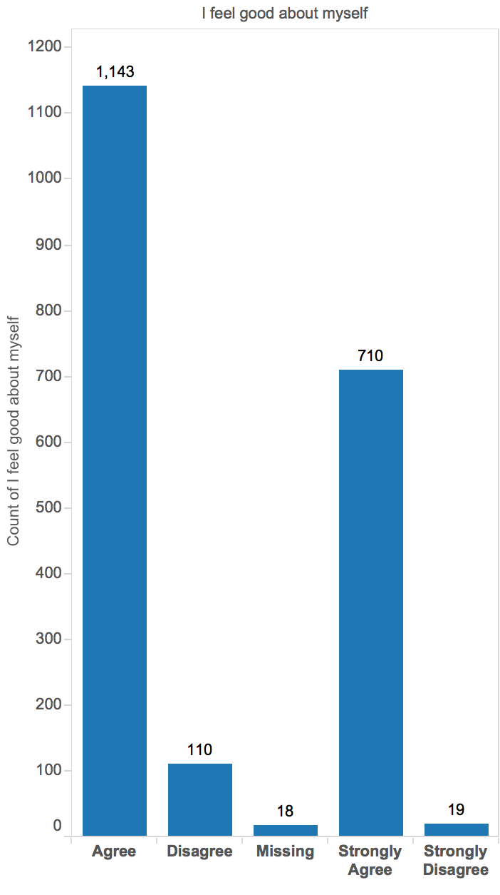

Does the mother's/female guardian's job title have an effect on the subject's self esteem?
Data is from the initial survey administered in 1880
Distribution of occupations for mother/female guardian.
Distribution of answers for each of the selected questions. Occupation set to "Service".

Data is from the initial survey administered in 1880
Data from the 1st follow up administered in 1990. Occupation set to "Homemaker".
Distribution of answers to "I feel good about myself".
Data from the 1st follow up administered in 1990